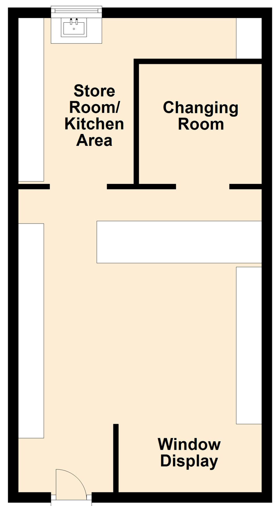

Practice with <img>, srcset, <picture>, SVG, and accessibility
Responsive Image Gallery
Basmati rice — 5 kg bag.
Assorted Snacks Box
(WebP served when supported)
Delivery truck (SVG inline with accessible title/desc).
Decorative divider (not read by screen readers)
Decorative divider (not read by screen readers).

Click a section to navigate to that aisle (image map).